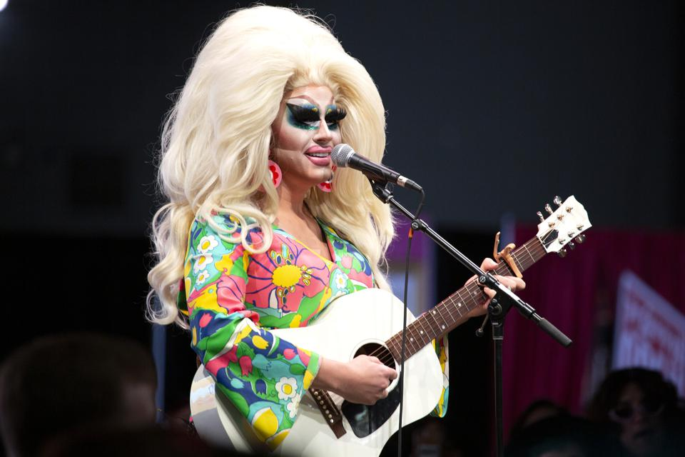
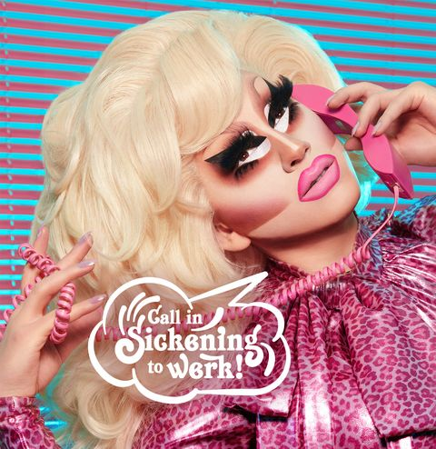
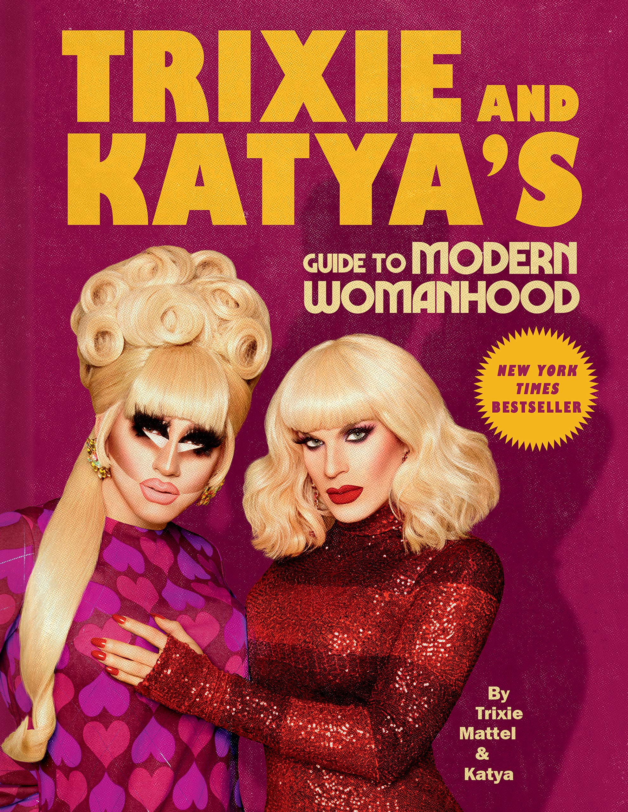

Drag queen, comedian, musician, cosmetics mogul
Trixie Mattel is the stage name of Brian Michael Firkus, an American singer, actor, drag queen, comedian, and cosmetics mogul. Trixie is the winner of “RuPaul’s Drag Race All Stars” season 3 (she originally competed on season 7 Drag Race) and is also a Billboard Heatseekers #1 charting recording artist, having released two albums—2017’s Two Birds and 2018’s One Stone. Along with fellow Drag Race alum Katya Zamolodchikova, Trixie stars in a successful YouTube series (UNHhhh) and in 2020 the two will publish their first book (Trixie and Katya’s Guide to Modern Womanhood) and star in their own Netflix series (I Like to Watch). In 2019 a documentary about Firkus, Trixie Mattel: Moving Parts, premiered at the Tribeca Film Festival. In 2020 Trixie Mattel will embark on a 29-date North American tour (“Trixie Mattel: Grown Up”) backed by a full band.
From a conversation with T. Cole Rachel
December 10, 2019
Before there was Trixie Mattel, before drag, were you writing songs? Have you been doing music since you were a kid?
Well, you know when people are like “I’m a songwriter,” but really all they did was walk into the room, change two lyrics, and demand that their name be put on the song? That’s sort of the culture of songwriting now, but that’s not where I’m coming from. I grew up mostly alone. I didn’t have a lot of people around. I had friends, but I lived in a place that was very rural. I didn’t drive. I wouldn’t see my friends during the summer between one school year to the next. So I would spend entire chunks of my teen adulthood alone, playing guitar, writing music. I was like 13 or 14 when the idea of, “I want to play guitar and sing and write songs” became very real for me. I was just like, “I don’t want to sell them. I want to own them. I want to be the person who sings them.”
I don’t know why it was such an important idea to me, to be the person who sings it and writes it, but there is a whole other level of pride there. Who’s going to tell your story better than you? And with songwriting, you really get to think up everything yourself. I’ve never taken a songwriting class, or read a songwriting book or anything. I don’t know anything about it, other than the way I’ve always done it. That’s the beauty of folk music—we’re all basically self-taught, so there’s no rubric. You know, if you want to do ballet, you’ve got to take ballet classes. For songwriting, you don’t really have to answer to anybody. There’s no right or wrong way, you know?
So, my process is usually—believe it or not—most of the time I write the song top to bottom. I write the first line, second line, third line in order. I know that’s kind of weird. I think a lot of people come up with a phrase first, or they think of the hook first, but I really write it in a linear way.
Do you usually write on a guitar?
Yeah, I usually play guitar. I wrote "Moving Parts” on the autoharp, but most of the time, I just play guitar. I’ve been playing that since I was 13, so I just really know that instrument. I know how to work it.
I would say that Drag Race has, perhaps, a somewhat dubious history with music…
Um… spill the tea. What do you mean?
Well, there has been this history of Drag Race queens often releasing pop singles along with a video, but they weren’t always the most well-considered pieces of music and usually not accompanied by a full album. The singles were more like merch that they could sell. Your records transcend that—these songs really exist in their own world outside of the show. At what point did it seem like these two things—this music that you make and this drag character that you created—should logically go together?
Honestly, it’s still weird to me that they do. You know, outside of drag I’m just a white guy with a guitar. There’s not exactly a huge demand for that. There are plenty of white guys out there strumming guitars. But when doing drag and doing comedy as Trixie, I realized pretty early on there was something there that nobody else was doing and something that was kind of different. Because of the way Trixie looks, because of the Barbie thing, I really had this very quick way to enter people’s hearts. People look at the color palette and the proportions, and it takes them back to being five years old and unwrapping a toy doll. It’s a way to get people invested in my work quickly. And I love dolls, obviously.
I remember in one of my earlier shows, Ages 3 and Up, there was a whole 20-minute block of stand up about being broken up with. And the jokes went from funny to sad. The jokes were written to sort of spiral where, they’re funny, but then they’re actually kind of like, “Is she okay?” It’s a little like, “She’s laughing a little too hard at the joke about being alone,” you know?
I just ran with it. I just took a swing. It felt right, but I didn’t know. I did this song called “I Know You All Over Again” in the show—this is before I even thought about recording it. At the time I was just writing all this music for fun. That’s the other thing—I write all of this music for fun, before I even think about recording it. So anyway, I played “I Know You All Over Again” every night. It was like a 55-show run in Provincetown. Every night, people would be like, “Great show. That song is the best part. Oh my god!” I was like, the best part of my hour long comedy set was a sad song? Thanks a lot. But what it told me was that comedy and earnest storytelling are so neck and neck, so braided together, that I can really get away with it in my act. I can really get away with looking kind of fun and telling some fun dark jokes. And then, punctuating the set with songs.
I didn’t know if that was going to work. I didn’t know of any other drag queens who had done that. But, if you look at early Sarah Silverman or Bo Burnham or Adam Sandler, there are a lot of people who have done something similar. But because I was a drag queen, it just never occurred to me. When I first started getting really into drag, I was like, “Well, I guess I’ll give up the music thing and just make it my hobby.” I thought, “I don’t have to do music for a living. It’s probably not going to work out, anyway. No one’s going to want to hear it.” It’s so crazy to think about that now because it’s such a part of the act, when for so long I was basically ready to be like, “Because of drag, I’m never going to do this music.”
When you write songs now and you think about performing them and recording them, I assume you also have to think about the fact that the song is going to be transmitted through the prism of Trixie Mattel and it needs to make sense in that context.
Yes, totally. I have to think about where it’s going to belong in the context of my shows. My show has always been mostly stand up with some concert elements, so I always have to think about how the songs will work in that setting. I write a lot of songs and not all of them even get recorded, let alone used in shows. There’s a lot of songs from my records that I’ve never played live because I haven’t found a way for them to belong in the piece. Again, I know the instrument is a little crazy looking, and I know that I’m selling something a little crazy, so I really try to make sure it all works together.
For my upcoming tour, Grown Up, the balance is a little more 50/50 with music and jokes. This is my third big tour. I was always flattered to get the comment, “I love your music, but I really thought there was going to be more songs!” So this year I’m really trying to lean into playing my guitar more, and singing more. I’m traveling with a band now, so my new music is a lot more plugged in—sort of post-Beatles invasion-style vibes. I’ve done the country thing and the folksy thing, so this is a little more mod. I’m very retro. This is like ’60s, beginning of the birth of rock and roll, style music. With jokes!
Touring with a full band is a whole new world.
Oh my god, I have never even done it. Because I’m from such a rural area, I never even had the high school experience of having a garage band, or playing with my friends. I’ve only played with a band maybe five times in my life. So right now I’m writing the show and we’re going into rehearsals with the band.
Trixie Mattel is a great vehicle for doing different things—stand up, music, visual art, cosmetics. She feels like a fully formed entity that allows for all of these creative practices to flow through her.
Yeah. Sometimes I’m like, “Are you playing with fire? Like, are you tempting fate? Is this finally the project where you get too big in your britches and you fall on your face?” But I mean, so far, it’s been OK. This year I started my makeup company, so I’m also owning and running a second business now that’s not about me performing. I’m not like drag queens who own makeup companies where they just put their name on something. I’m actually at the lab in drag, putting makeup on my face. We don’t have a lot of people. My company has enough employees to maybe fit in an Uber. That’s it.
With every project I take on I’m always waiting for things to go wrong. Last year I did the Moving Parts tour and this year we had the documentary, so this year I was wondering if people might finally be like, “Yeah, we saw you and we’re done. Nevermind.” But the presale ticket sales were very good, thank god. But in my mind I’m always thinking, “Ok, This is the time you’re gonna go out there and play autoharp. Are people going to hate it or are they going to live for it? Who knows!” A few years ago, I had a tap dance number in the show, and I was like, “Are people going to love it or hate it?” I’m always trying to introduce new things because so many of my fans have seen me 20, 30 times over the past year. There are people who, when I go on tour, will just follow the tour. And see it every night. Those are the people I am always trying to write a new show for. When I see familiar faces in the audience it’s fun to try out new material because I know they’re gonna be gooped. Brand new jokes!
You have a lot of things coming up—a solo tour, a tour in Europe with Katya, a book, a webseries. How do you strike a balance between doing all this stuff and not losing your mind? Or does it feel like you still have to strike while the iron is hot and just do as much as you can?
Well, it’s a few different things. We’re in entertainment, so you never know when the last gig is. I always live in constant fear that the day I turn down a gig is the day that every gig stops calling. No one cares anymore. So I have a hard time taking time off. My boyfriend and I have been together for years. He loves Trixie, but he doesn’t always love that I have so much to do. He understands that I don’t have a team around me doing all this stuff. This is it. I’m it. So if I owe songs for the record, I need to write them. If I need new jokes for the tour, I need to write them. I have to go to costume fittings, I have to go to the makeup labs. There isn’t anyone else that can fill all of these shoes, because ultimately it all ends up being on me.
So that’s part of it, but also… I really love being Trixie. I grew up living and breathing for kids toys, specifically for little girl toys. I also remember being 11 or 12 years old and stealing a bunch of comedy albums on LimeWire and being totally fixated them. I remember feeling like, “I don’t dare dream of being a comedian, because that’s not possible.” Stand up comedy was just a revelation, you know? It just seemed impossible for someone like me to do.
I’m very pragmatic, but for me to focus and have all this stuff going on at once, I now have in my house that wall that looks like a serial killer’s map—like a murder wall. I have an area for my album, an area for costumes for my tour, an area for my makeup company. I have an area for the jokes for my next tour. I can look at all of it up there together and then I sort of have to just pick a project, one at a time, and focus. I also have to just go with the flow.
That makes sense.
There’s so much to do. And like I said, I do worry sometimes that I’m getting a little too fierce. But, I do really listen to my internal compass, if something seems like a good idea, it usually is. It’s sort of like when people write music— usually if it’s a good song, they sat down and wrote it in 10 minutes. And that’s the story behind it. Like, “I just sat down and it came out.” That usually means it’s good. So for me, if I’m inspired to do something and it’s coming out organically, that’s usually the right move. I don’t really second guess it.
I think back to doing Two Birds, my first record. It felt like quite a risk. I paid for that whole record myself, which was about $20,000, which I know is nothing, relatively speaking, for recording music. I remember the day it came out, feeling like, “All right, this could be a huge loss. And if it is, I just need to make peace with the fact that this money just might never come back to me, and no one will care.” And then it opened up a whole different world for me. It really changed the way people see me. It really changed the dynamic of my act. You know, doing stand up with a guitar in your hands, it really changes the whole flavor.
I think a big reason that you—along with queens like Bianca del Rio and Alaska and Jinx Monsoon—all did well in a post-Drag Race world was that you came to the show with a fully formed character. It wasn’t just about trying to be pretty or pageanty. You had a fully realized aesthetic and, for lack of a better word, a schtick already sorted out. I’m curious, what advice do you have for young drag queens just trying to enter this landscape?
That famous Eddie Murphy quote is my favorite. He says, “My best advice is, don’t take anybody’s advice.” I mean, for better or for worse, you really can’t tell me nothing. It’s so hard to convince me that I don’t know what’s best. I’m the person where if you have a great idea, you have to trick me into thinking it was my good idea. I’m kind of stubborn in that way.
Honestly, with Trixie, I have such a clear idea, I have such a clear picture of her. I mean, I’ve been putting her together for around 12 years now and it’s been a slow process. For the first few years I knew I liked the pink, I knew I liked the blonde, and I knew the type of songs I wanted to do… and that was about it. But now I’m totally clear on the type of music I do, what my voice sounds like, and what my comedic voice sounds like. I’m clear on the aesthetic. When I’m sitting down to write something for Trixie, it just feels like I really know exactly what it is. I’m very confident in being like, “Oh, that’s not really the point of view Trixie would take,” or “She wouldn’t really say that” or “She wouldn’t react that way.” Not that it’s a different person. I’m not like a BenDeLaCreme, where it’s like a whole different persona. But because Trixie is really anchored in me, Brian, it’s easy to say, “I know what I would think is funny. And I don’t think that’s funny.”
Another thing I would tell younger queens is—be real about what you’re good at. You know, not even RuPaul is the best at everything. She just makes sure that when the camera’s on, she’s only featured doing what she’s good at. Then you look like you’re good at everything.
Also, you don’t have to be the best at everything. You really don’t. But drag queens usually lack self-awareness. So if someone is there to be like, “Uh, maybe you’re not much of a singer, girl.” Or, “Maybe dancing is just not your gig.” Drag queens are like, “Oh yes, it is.” If you can’t accept certain realities about yourself and your abilities, you’re not really doing yourself any favors. If you’re not good at something, don’t do it. And it’s totally fine.
That’s the thing about Drag Race though—as opposed to a million other reality shows—it does require you to be good at a bunch of different things. You have to be funny. You have to be able to at least try to sing and dance and act and maybe do stand up and impersonations, as well as be able to sew and be a make-up wizard. It demands a pretty large skill set.
As drag queens, we are generally pretty used to having to do everything ourselves. If you’re getting paid $40 from a shitty club to show up and do a number, you better be able to really do everything. You know, if I had to pay people to write my songs and my jokes, I wouldn’t do it.
UNHhhh w/ Trixie Mattel & Katya Zamolodchikova
Trixie Mattel: Moving Parts - Official Trailer
“Drag Queens Trixie Mattel & Katya React to The Crown” - I Like to Watch (Netflix)
Trixie Mattel - “Break Your Heart”